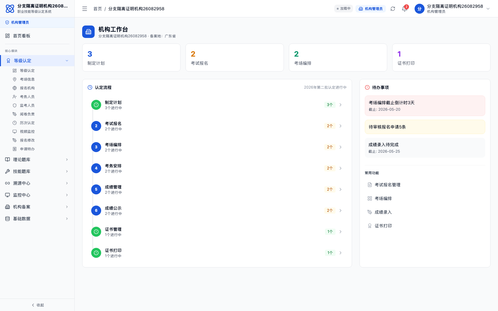
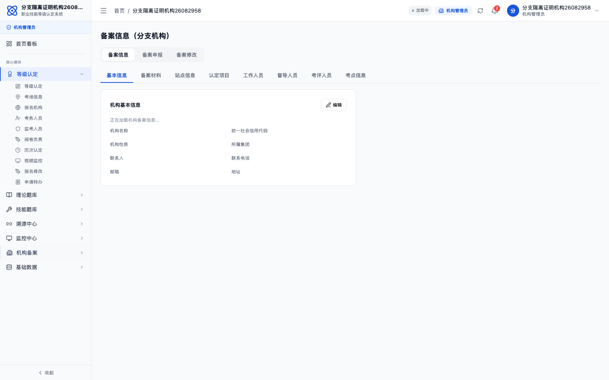
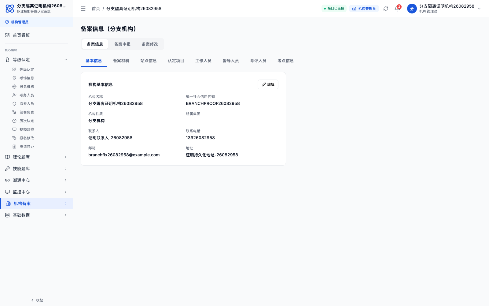
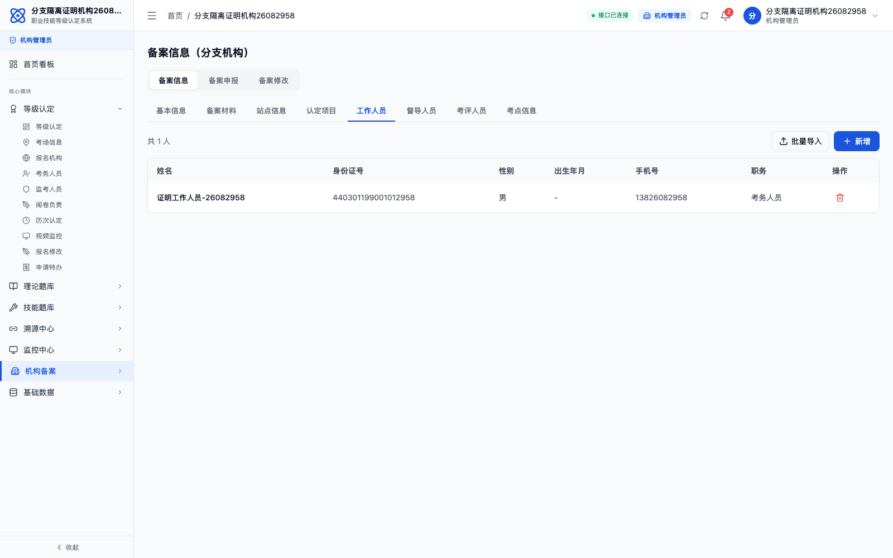
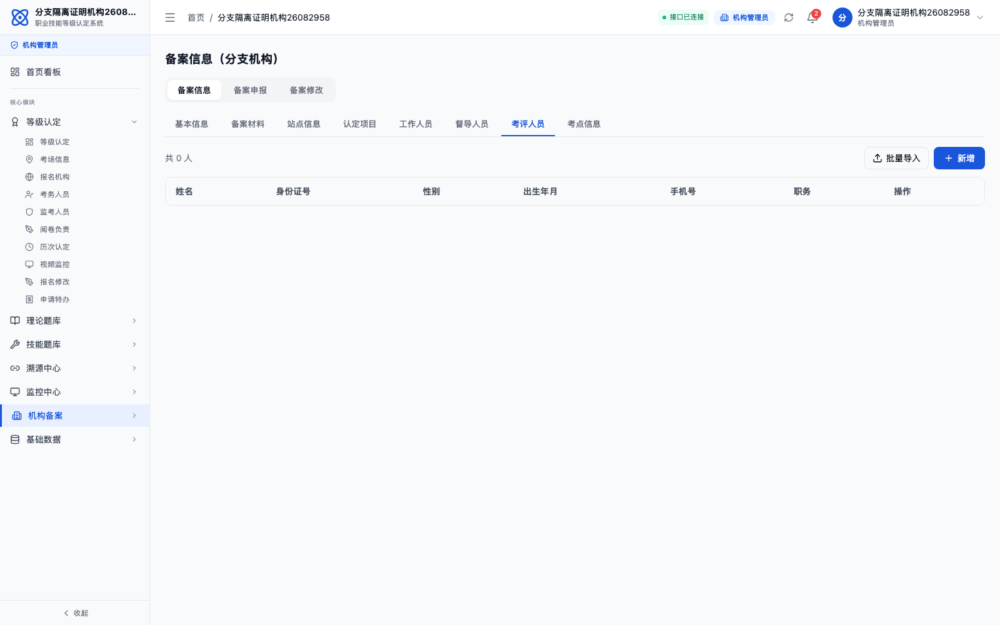
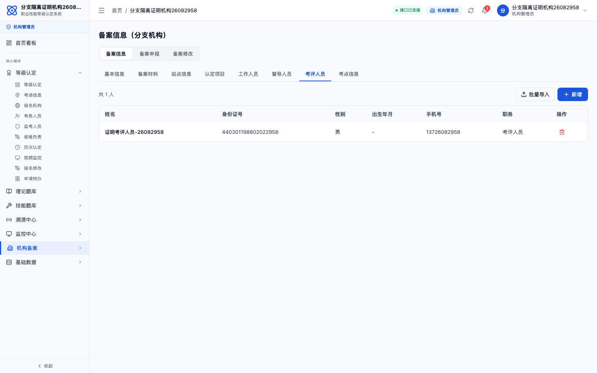
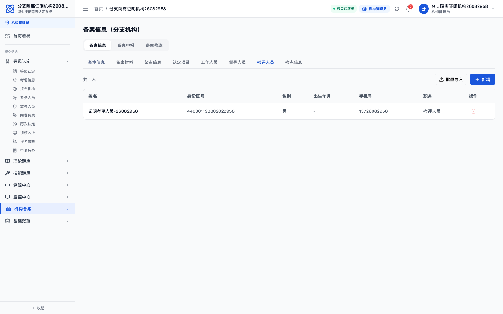

本证明基于公网环境 http://106.12.6.24:29527 生成，创建证明机构和证明账号后完成真实登录、页面保存、刷新校验和 API 校验。
生成时间2026/5/26 16:30:03
发布版本
3.1.1 / 7dc0f651-f781-48a3-a8c7-d99c16751074证明机构分支隔离证明机构26082958
登录账号
branchfix26082958登录密码
Fix@26082958登录验证
POST /api/auth/login → 200 / branch_admin基础信息验证
GET /api/filing/branch-current → 证明持久化地址-26082958人员隔离验证
exam_staff / evaluator 按 staffType 分离修复 1：分支备案页改为调用当前登录机构接口，后端从 token 的 org_id 取数，禁止读取其他机构备案资料。
修复 2：基本信息保存写入 organization 与分支备案 profile，刷新页面后从数据库重新加载。
修复 3：工作人员、督导人员、考评人员分别按 staffType 查询和保存，三类页签不再共用本地数组。
修复 4：登录后的机构名称优先使用账号所属机构名称，避免分支账号显示“测试有限公司”等兜底名称。
1. 证明账号真实登录成功

2. 分支备案基础信息按当前登录机构显示，不再显示其他公司数据

3. 基础信息通过保存接口写入数据库，刷新后仍保留

4. 工作人员页签新增人员后保存到当前机构

5. 切换到考评人员页签不再复用工作人员数据

6. 考评人员页签新增人员独立保存

7. 刷新后考评人员仍存在，证明写入数据库
